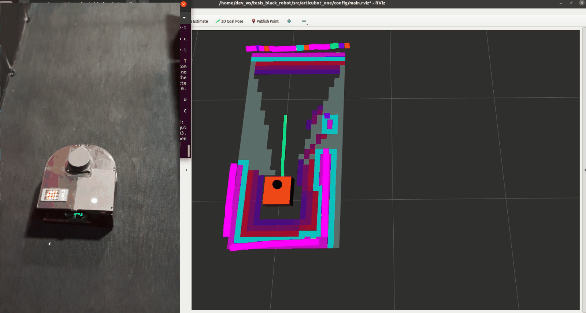
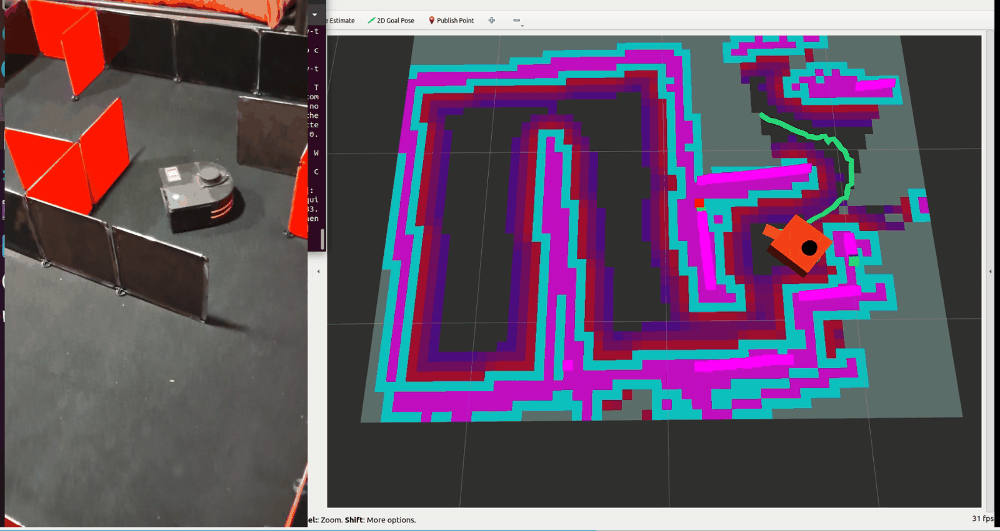

Medido contra una referencia independiente
Con repeticiones y una referencia externa al propio sistema. Ejemplo, la odometría frente a una cinta métrica, cinco veces.
Evidencia y práctica
Un resultado vale tanto como la forma en que se midió. Este tema reúne lo que demuestra el trabajo, con qué nivel de evidencia, cuánto permiten afirmar sus pocas repeticiones, qué quedó parcial, dónde fallaría el robot y qué viene después.
Sí fue posible mapear y explorar un interior con un robot de bajo costo. Cinco de seis ejecuciones produjeron un mapa válido y terminaron solas, sin intervención. La odometría quedó validada con mediciones, el control se evaluó en el robot real y su estabilidad se verificó con un modelo, y el mapeo, la navegación y la exploración quedaron verificados en funcionamiento. Los mapas, además, quedaron a 3,4 cm en promedio de un plano medido del recinto. Dos objetivos se cumplieron y dos quedaron parciales, y explico por qué con datos.
Hay que leer todo esto con una advertencia. Los ensayos se repitieron muy pocas veces, cinco o seis, así que sus resultados se informan con intervalos de confianza y como una verificación en el entorno ensayado, no como una tasa que se pueda generalizar. Cuánto permiten afirmar está en Cuánto dicen cinco repeticiones.
Uso tres niveles de evidencia, y entenderlos es la mejor forma de leer los resultados. La diferencia de fondo es la que hace el manual de ingeniería de sistemas de la NASA entre verificar, que es comprobar que se cumplen los requisitos especificados, y validar, que es demostrar que el producto cumple su propósito en el entorno real 2.
Con repeticiones y una referencia externa al propio sistema. Ejemplo, la odometría frente a una cinta métrica, cinco veces.
Con indicadores reales, pero en un caso particular. Ejemplo, el control de velocidad a 0,13 m/s.
Sin un indicador cuantitativo de desempeño. Ejemplo, la navegación hacia las metas del explorador.
El control agrega una evidencia de otro tipo, una verificación analítica. La estabilidad y los márgenes se calcularon sobre el modelo identificado de cada rueda. No reemplaza a la medición en el robot, la complementa, y vale solo para el modelo lineal 1.
En este sitio cada resultado dice en cuál de los tres niveles está.
| Subsistema | Estado | Evidencia y lo que falta |
|---|---|---|
| Odometría | Validada cuantitativamente | Recta de 2 m, cinco repeticiones, error medio de 3,63 % frente a cinta, con intervalo de confianza al 95 % de 3,08 a 4,18 %. En simulación no hubo referencia independiente y el protocolo angular no mide error odométrico angular. |
| Control de velocidad | Evaluado experimentalmente y verificado analíticamente | Captura real en lazo cerrado a 0,13 m/s, error estacionario de 0,002 m/s o menos, sin sobreimpulso apreciable. Estabilidad y márgenes verificados con el modelo identificado, en la Tabla A4.5. Un solo punto de operación. |
| SLAM | Verificado y caracterizado cuantitativamente | Cobertura y área libre en cinco iteraciones válidas. Posición de los muros comparada con el plano medido del recinto, con una distancia media de 3,4 cm. |
| Nav2 | Verificada funcionalmente | Ejecutó 59 metas del explorador durante 21,9 m de recorrido. De los 54 abortos, 53 cumplen el criterio temporal de asociación a reemplazos, así que el resultado de las metas no mide una tasa de éxito. Metas fijas fuera del alcance declarado. |
| Exploración | Verificada funcionalmente | Cinco de seis ejecuciones terminaron solas al no quedar fronteras, sin intervención y con mapa válido. Cobertura libre media de 62,2 % y área libre media de 3,50 m². |
| Localización | Verificada funcionalmente | Resuelta por slam_toolbox durante el mapeo en línea, en las cinco iteraciones válidas. AMCL sobre un mapa guardado queda fuera del alcance declarado y no se ensayó. |
El video de la cabecera muestra una ejecución de demostración sobre el robot real. A la izquierda, el robot visto desde arriba. A la derecha, RViz con el mapa que se va construyendo y, en verde, la ruta hacia la frontera elegida. El mapa crece a medida que el láser ve geometría nueva, que es la evidencia de que el robot se desplaza 3.


Las cifras de esta página vienen de ensayos con registro. El video sirve para verlas funcionando.
Respecto de la pregunta de investigación, la respuesta es afirmativa para mapear y explorar en el entorno ensayado. Con seis ejecuciones, el cinco de seis se considera descriptivo y no se generaliza como tasa de desempeño. La navegación funciona de extremo a extremo, y lo que queda abierto es medirla con un protocolo de metas fijas 1.
Cuatro lecturas apresuradas que conviene evitar. Decir que el robot cubre el 62 % del recinto, cuando ese índice depende del tamaño de la imagen. Decir que solo una de cada sesenta metas se cumplió, cuando 53 de los 54 abortos coinciden en el tiempo con reemplazos que hace el propio explorador. Decir que el robot exploró todo el recinto, cuando lo que se sabe es que no quedaron fronteras y que las cinco corridas llegaron a la misma área libre. Y decir que cinco de seis es una tasa de éxito de 83 %, cuando con seis ejecuciones solo se puede afirmar que supera el 35,9 %.
Una media calculada con cinco ensayos no es la media verdadera. Es una estimación, y su intervalo de confianza al 95 % dice entre qué valores es razonable que esté la verdadera. Se calcula con la media, la desviación estándar y un factor de la distribución t de Student, que con cinco repeticiones vale 2,776 4. Para una proporción, como cinco exploraciones válidas de seis, se usa el intervalo exacto de Clopper y Pearson, uno de los más usados para tasas de éxito en la evaluación de robots 5.
| Indicador | n | Media | Intervalo al 95 % |
|---|---|---|---|
| Error odométrico | 5 | 3,63 % | 3,08 a 4,18 % |
| Error de seguimiento | 5 | 7,18 % | 6,65 a 7,71 % |
| Desviación angular respecto de 360° | 5 | 11,7° | 1,8 a 21,6° |
| Índice de cobertura libre | 5 | 62,2 % | 46,2 a 78,3 % |
| Área libre mapeada | 5 | 3,50 m² | 3,46 a 3,53 m² |
| Distancia media del plano al mapa | 5 | 3,4 cm | 3,1 a 3,7 cm |
| Exploraciones válidas | 6 | 83,3 % | 35,9 a 99,6 % |
Los indicadores con poca dispersión, como el error odométrico, el área libre y la distancia al plano, quedan bien acotados aun con cinco repeticiones. La cobertura libre y la desviación angular, en cambio, tienen intervalos muy amplios. El control de velocidad tiene una sola captura por conjunto de ganancias, así que no admite un intervalo 1.
Supongamos que el sistema fuera una moneda, con 50 % de probabilidad de dar un mapa válido. ¿Qué tan raro sería ver cinco éxitos o más en seis intentos? La prueba binomial exacta responde que pasaría 7 de cada 64 veces, p = 0,109375. Eso no basta para descartar la moneda al nivel habitual de 0,05. Con seis intentos, el único resultado que lo permitiría es seis de seis, con p = 1/64, así que una sola falla basta para perder la significancia 4. Por eso, y porque todo ocurrió en un único recinto, la tesis presenta los resultados como una verificación funcional en el entorno ensayado.
La tesis considera admisible un mínimo de 6 a 10 repeticiones válidas por ensayo, con 10 por condición como objetivo de partida y un total que dependa de la dispersión y de la precisión buscada. Ese criterio es coherente con la guía Eurachem de validación de métodos analíticos, que considera necesarias de 6 a 15 repeticiones para estimar una desviación estándar y señala que a menudo se recomiendan 10, aunque no se refiere a ensayos robóticos 6.
Con la misma dispersión, los intervalos de la media se angostarían cerca de un 42 %, porque el factor t dividido por la raíz de n baja de 1,24 a 0,72.
Reducir a la mitad el intervalo del error odométrico pediría unas 13 repeticiones. Afirmar una tasa de éxito sobre el 80 % pediría al menos 17 ejecuciones seguidas sin fallas.
Un intervalo honesto vale más que una media sola. Dice cuánto se sabe y cuánto falta medir.
Estas son las limitaciones que reconoce la tesis 1.
Sin unidad inercial, la odometría acumula error en giros y recorridos largos.
El espacio disponible limita los recorridos largos y condiciona la geometría de los mapas de costos.
Los contadores no identificaban metas únicas y el resultado se reconstruyó después. Sin un protocolo con metas fijas, no hay tasa de éxito ni error de posición final.
El plano se midió a mano. El espesor de los muros explica a lo sumo 4 de los 12 cm en que los pasillos salen más anchos, y el resto puede venir de la medición o del mapa.
Los indicadores de la Tabla 5.3 vienen de la captura real. Los sobreimpulsos de 10,7 a 15,6 % vienen de una simulación ilustrativa y no son la misma prueba.
La captura de 0,1 s no resuelve el retardo, el único escalón no representa la zona muerta y la simulación del costo del PSO no replica los enteros del firmware.
Kp actúa como ganancia integral, Kd como proporcional sobre la medición y Ki como segunda integración. Su estabilidad se verificó con un análisis lineal, sin compararla con un PID incremental estándar ni caracterizarla a baja velocidad.
Gazebo Classic no reproduce del todo la fricción, la zona muerta del driver, el ruido de los sensores ni las latencias reales.
ROS 2 Foxy y Gazebo Classic ya no reciben soporte oficial.
Un único recinto, de 3,50 m² de área libre media, y cinco iteraciones. Los intervalos son amplios en la cobertura, la desviación angular y la proporción de exploraciones válidas.
Lectura no atómica de encoders, posición global del PSO copiada desde la posición actual y sin semilla fija, y puntaje de fronteras con unidades mezcladas. Se documentan tal como se ejecutan.
El explorador envía una meta nueva sin cancelar la anterior y Nav2 la informa como abortada. Por eso el resultado de las metas no mide éxito, y la lista negra recibe fronteras que no fallaron.
Imagina llevar el robot a una oficina con sillas, mesas, ventanales y gente caminando. Estos son los problemas que anticipo.
Las mesas y sillas son el primer problema. El láser ve un solo plano, así que detecta las patas pero no la cubierta ni el asiento. Los ventanales y las superficies muy reflectantes o muy absorbentes degradan la medición. El sistema no está pensado para personas que se mueven rápido. En pasillos estrechos el radio de inflación es menor que el alcance de la esquina del robot y nada revisa la huella completa. Y en una oficina grande, más recorrido significa más deriva sin unidad inercial, mientras que ni la autonomía de la batería ni la carga del computador se midieron.
Propongo doce líneas de trabajo, en este orden. Cada una es un buen punto de partida para otro proyecto de título o para un curso.
Si quieres tomar uno de estos puntos, Constrúyelo tú reúne lo necesario para empezar, y en el repositorio del sitio puedes dejar una nota de lo que estás haciendo.
Los números del texto llevan a esta lista. Qué es cada referencia de la tesis y para qué la usa el trabajo se explica en la bibliografía de la tesis.